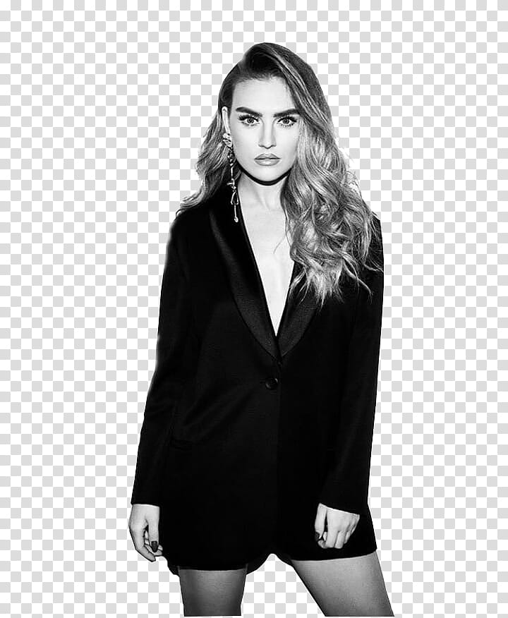

Favorite playlist
Little Mix are a British girl group formed in 2011 during the eighth series of the British version of The X Factor. The group consists of Jade Thirlwall, Perrie Edwards and Leigh-Anne Pinnock; former member Jesy Nelson left the group in December 2020 due to mental health issues. The first group to win The X Factor, they signed with Simon Cowell's record label, Syco Music. They released a cover of Damien Rice's "Cannonball" as their winner's single, which debuted atop the UK Singles Chart upon release. The group are known for their strong vocals and signature harmonies, as well as their representative songs about female empowerment and unity.[1]
members
Jesy Nelson
Jessica Louise Nelson (born 14 June 1991) is an English singer and former member of British girl group Little Mix. The group was formed on the eighth series of The X Factor in 2011 and became the first group to win the competition. Since their debut the girl group has sold over 50 million records worldwide, placing them in the top 5 of the best selling girl groups of all time.
Leigh-Anne

Leigh-Anne Pinnock was born on 4 October 1991,[1] and was raised in High Wycombe, Buckinghamshire.[2] Pinnock is of Barbadian and Jamaican ancestry.[3] She is the daughter of Deborah Thornhill, a teacher at the Harlington Community School, and John L. Pinnock, a mechanic, both whom filed for divorce in 2009. She is the youngest of three children and growing up, she looked up to her two older sisters Sian-Louise Pinnock and Sairah Pinnock
Perrie Edwards
Her first audition on The X Factor was "You Oughta Know" by Alanis Morissette.[6] Edwards and Jesy Nelson were put in a group called Faux Pas while Jade Thirlwall and Leigh-Anne Pinnock were put in a group named Orion. Both groups, however, failed to progress. Later, a decision was made to bring back the four to form the four-piece group Rhythmix, and they progressed to judges' houses.[7] They eventually reached the live shows and were mentored by Tulisa Contostavlos
Jade
Thirlwall was born and raised in the Laygate area of South Shields, Tyne and Wear. She is the daughter of Norma Badwi and James Thirlwall and has an older brother named Karl Thirlwall.[3] She is Egyptian and Yemeni from her mother's side and English from her father's side.[4] She auditioned for The X Factor in 2008 and 2010 but was eliminated at the Bootcamp stage.[5][6] She attended performing arts college South Tyneside, where she studied a range of courses.[7]
songs
Here are some of their songs